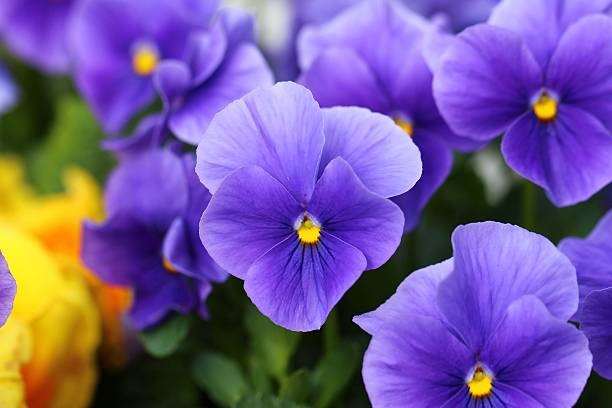
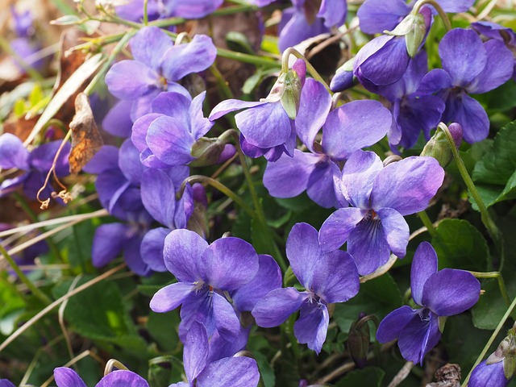
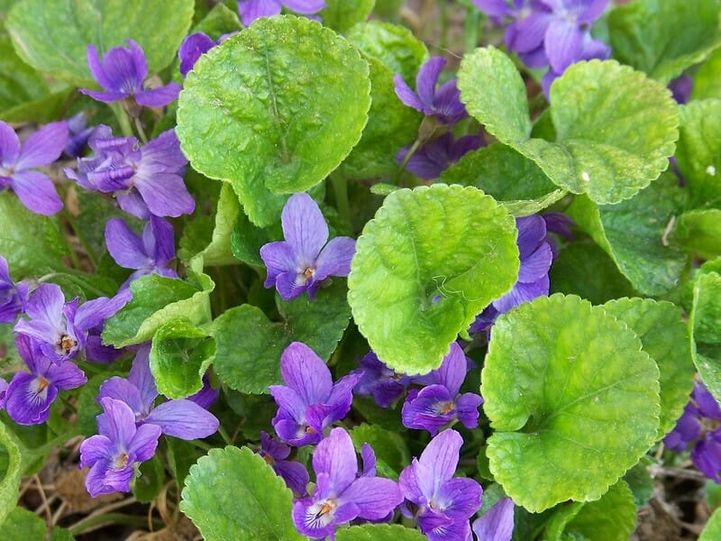
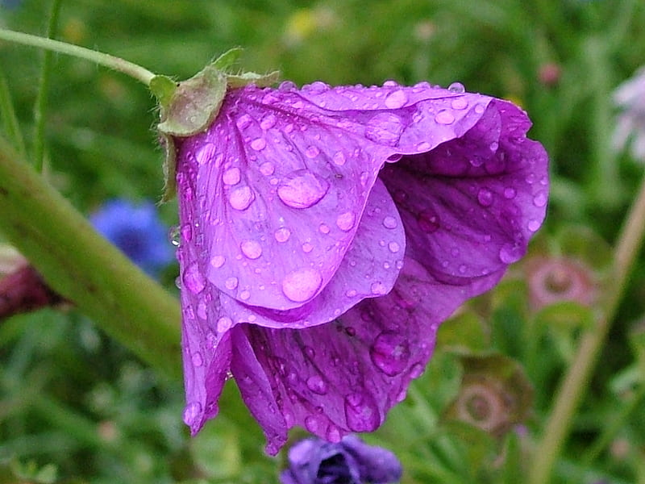

Meaning: Modesty
Origin
The violet grows low to the ground with its head bowed: a picture of modesty. Originally the flower of Valentine’s Day, it is said that Saint Valentine, while jailed for attempting to spread Christianity, crushed violets growing near his cell in order to make ink. One legend claims he used this ink to write a letter to his jailer’s daughter, whom he had healed from blindness, signing it, “Your Valentine,” thus inspiring centuries of romantic notes.
Gallery



